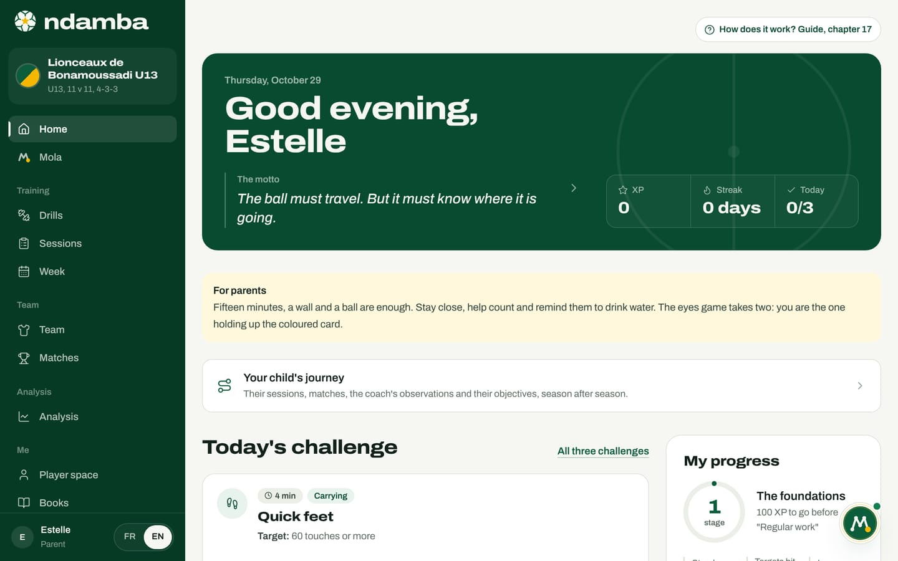
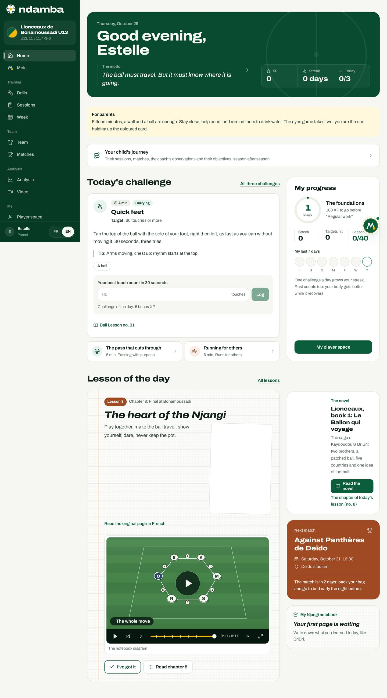
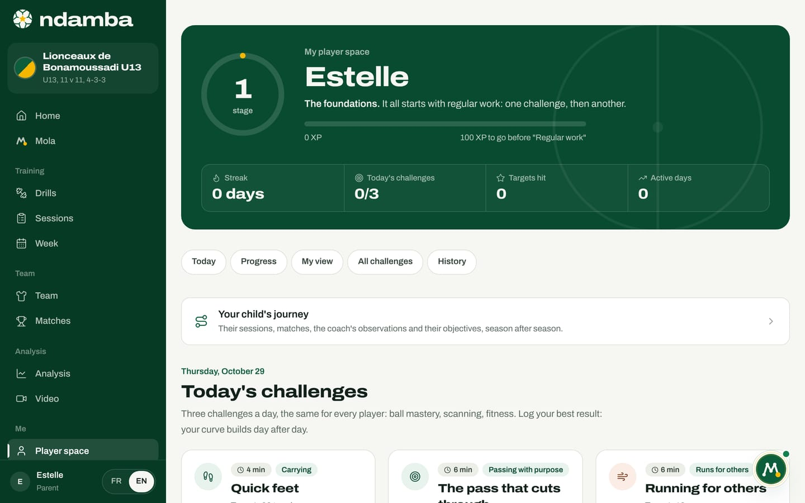
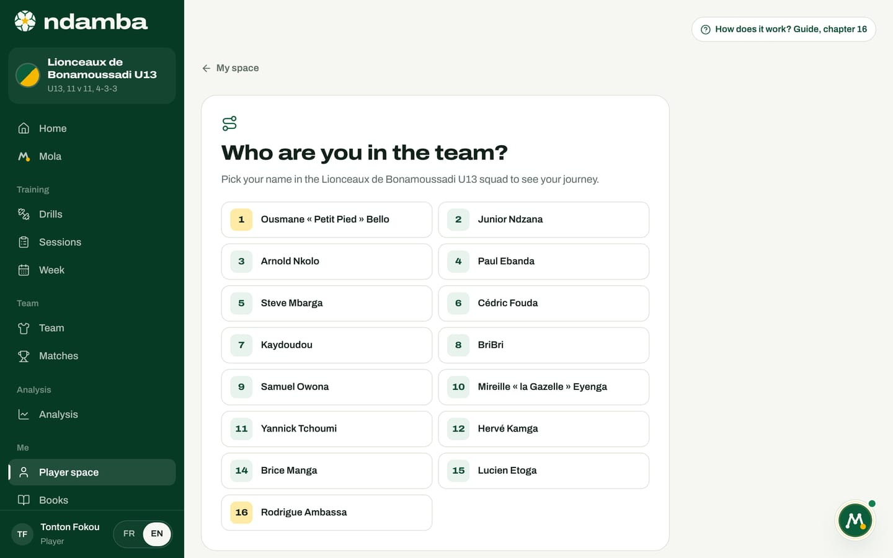

Parents
What a parent sees, how to follow a child and do today’s challenge together without piling on pressure, what Ndamba keeps on the device and never sends without you, and the books to read together.
8 min read
Before the coach, there are the parents. They wash the shirt, pay the fare to the pitch, wait on the touchline and ask, in the evening, "So, how was the match?". They have a huge influence on whether a child wants to carry on, for better or worse. Ndamba gives them a clear place: to support their child’s work at home, to understand what the child is learning, and to help without turning football into an exam. This chapter describes what a parent sees, how they can follow their child today, and what the app does, and does not do, with a minor’s data.
What a parent sees
A parent picks the Parent role in the welcome conversation with Mola (chapter 5), or later in Settings, under Role. When they choose it at the welcome, Mola greets them with a message written for them: it can help them support their child with the Ball Lessons, simple drills and the novel. The menu is the same as everyone’s: a parent can open the 64 drills of The Njangi Code or the books, which are open to all.
The parent sees the youth home and player space described in chapter 15. They keep that space even if their child is 16 or older: the performance space, with the morning form and the training load, is made for the player themselves.


Only one thing changes on the home page, but it matters: the For parents box, just under the greeting. It says the essentials in three sentences: "Fifteen minutes, a wall and a ball are enough. Stay close, help count and remind them to drink water. The eyes game takes two: you are the one holding up the coloured card."
The rest of the home page is the child’s: Today’s challenge, open and ready to log, the My progress card (stage, streak, lessons understood), the Lesson of the day with its diagram, the novel card, the team’s Next match and the notebook. These pages speak to the child directly: they are made to be read together, the parent alongside, the phone resting on a low wall while the child plays against the wall.
The Next match card is often the most useful to a parent: the day, the time, the ground, and a small ritual for the night before ("The match is in 2 days: pack your bag and go to bed early the night before."). It opens the match sheet prepared by the coach.


The parent’s Player space is the same as the child’s: today’s three challenges, progress, My view, the list of all challenges and the history. The name shown at the top is the profile’s name, so the parent’s.


Following your child
Today Ndamba has no accounts and no sync yet: all data lives in the browser of the device where it is entered (chapter 25). So following your child goes through the device.
The same device for the challenges. Challenge results, lessons understood, the notebook and My view are kept on the device where the child logs them. If the child does their challenges on the parent’s phone, the parent sees everything: the streak, the records, the history, the notebook pages. It is the simplest way to follow a child of 8 to 12, who often has no phone of their own.
The squad record for the journey. The journey (evaluations, observations, attendance, minutes played) comes from the team and its squad. When the child’s team is on the device, the parent links their profile to their child’s record:
- Tap the Your child’s journey card, on the home page or in the player space.
- The Which record is your child’s? screen shows the squad: "Pick your child’s record in the Lionceaux de Bonamoussadi U13 squad to follow their journey."
- Tap your child’s name. Their journey opens, and the Your child’s journey card on the home page now shows their season: "This season: 15 sessions, 4 matches, 2 objectives in progress."


Today, the journey written by the coach can only be seen on the device where the coach entered it. A backup exported from the coach’s Settings can carry it to another device, but it replaces everything already there. Sharing across several devices will come with accounts and sync, which are planned (chapter 26). Meanwhile, team news often reaches parents another way: the call-up the coach prepares with Mola and sends from their own phone by WhatsApp, text or e-mail (chapter 11).
| What you want to follow | Where it is kept | How to see it |
|---|---|---|
| Challenges, streak, records, history | On the device where the child logs results | Do the challenges on the same device |
| Lessons understood, My view | In that device’s browser | The same device |
| The Njangi notebook | On that device | The same device, or Print to keep it on paper |
| The journey (evaluations, observations, minutes) | On the coach’s device | Link your profile to the record, when the team is on the device |
| The match call-up | Sent by the coach | WhatsApp, text or e-mail |
Today’s challenge, together
Each challenge lasts four to ten minutes and is done alone, against a wall or with a few cones. A parent does not need to know football to help. They have three simple jobs:
- Count. Every challenge is logged as a number: juggles, passes against the wall, reps, seconds. The parent counts out loud, the child types their best result and taps Log.
- Hold up the card. Two challenges need A partner. In The eyes game, the parent holds up a coloured card behind the child, who passes against the wall, looks over the shoulder and calls the colour before receiving. It is lesson 22 of the novel, "Seeing first means playing faster", played in the yard.
- Look after them. A water bottle by the wall, five minutes of warm-up before sprints, one day a week without challenges. The app’s rule is clear and speaks to parents too: "If it hurts, stop and tell your coach or your parents."
Helping without piling on pressure
The app is built so the child compares themselves with themselves, never with others. Stages reward regular work before talent: the first is called The foundations, the second Regular work. The journey of a child under 13 shows no ranking and no sequence rating. A few habits carry that spirit into the home:
- Praise the streak and the effort more than the record. A rest day that breaks the streak is not a failure.
- Let the child decide when a lesson is Understood. Ask them instead to explain it in their own words, or to show you the matching challenge.
- Respect How I see myself. The page tells the child: "Be honest: it is for you, nothing is sent." If their view and the coach’s differ, the app suggests talking about it after training, not correcting the score.
- Read the journey starting with the strength. That is also what Ndamba advises coaches when they evaluate a minor: share the profile with the child and their family, starting with their strengths.
Your child’s safety
Ndamba was designed with minors in mind. Here is what the app does, and what it does not do.
- Data stays on the device. Challenges, the notebook, My view and lessons understood are kept in the browser. The challenge history says so: "Everything stays on this device: nothing is sent over the internet."
- No account, no public profile, no messaging. There is no way in Ndamba for a stranger to find a child or write to them. The only conversation in the app is the one with Mola.
- Nothing goes out without you. Mola prepares inside the app. A WhatsApp message, a text, an e-mail or a calendar file always waits for your approval in the To approve tab, then opens in your own messaging app: you are the one who presses Send.
- What can leave. When the optional AI model is configured on the server (chapter 18), the sentence you type to Mola is sent to Ndamba’s server to be better understood, with a little context (the team’s name and age group, the role, the next and last opponent). Challenge results, the notebook and the self-assessment are not part of it. Without that model, Mola answers with its rules engine.
- Erase everything. Settings, then Erase everything, deletes the profile, teams, sessions, matches, challenge results, notebook, lessons understood and My view in this browser; only the language choice stays. It cannot be undone.

The screen, the pitch and the books
Here the screen is only for reading an instruction and writing down a number: the work itself happens outside, with the ball. A challenge takes four to ten minutes, and today’s three challenges take between thirteen and twenty-four minutes depending on the day. One day a week without challenges is part of the programme.
The books, for their part, are free to read without limit, whatever the plan. The novel Lionceaux, book 1: Le Ballon qui voyage tells, in forty chapters, the story of BriBri and Kaydoudou, two brothers from Bonamoussadi who learn football from Cameroon to England (chapter 20). On the home page, the novel card offers Read the novel and, just below, the chapter of today’s lesson. A simple ritual works well with 8 to 12-year-olds: read the evening’s chapter together, open its Ball Lesson, and do the matching challenge the next day. For playtime, the Lionceaux Football game brings in the clubs from the book (chapter 21).